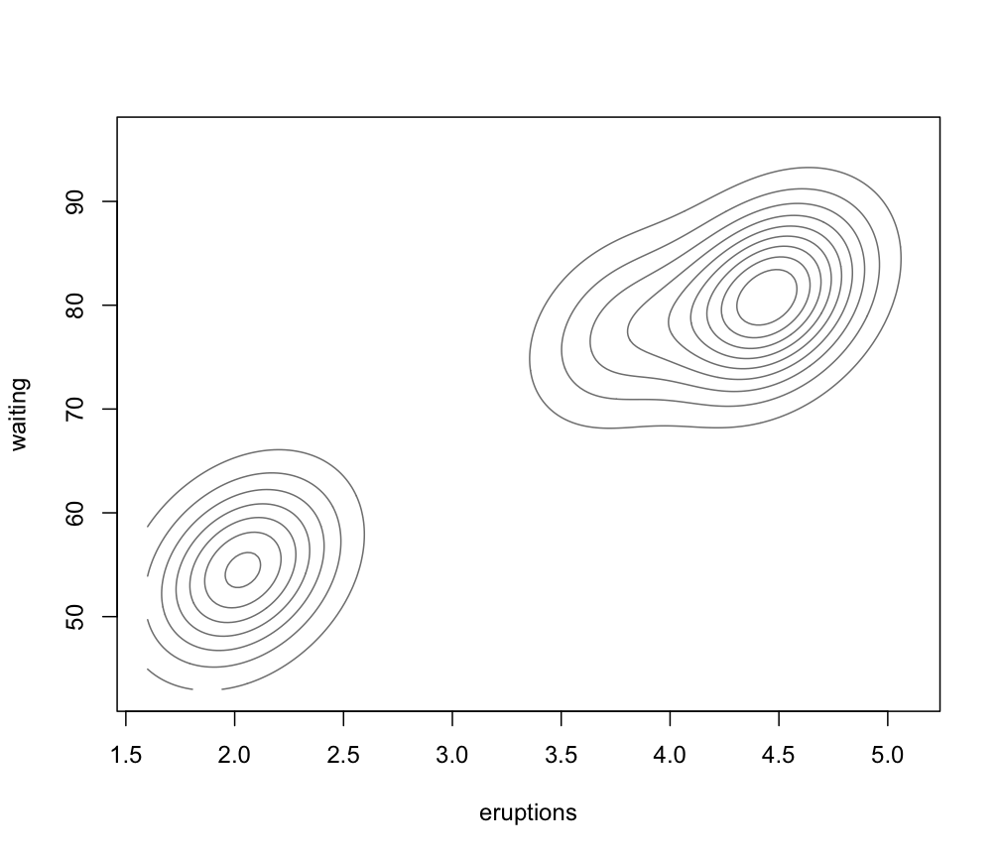
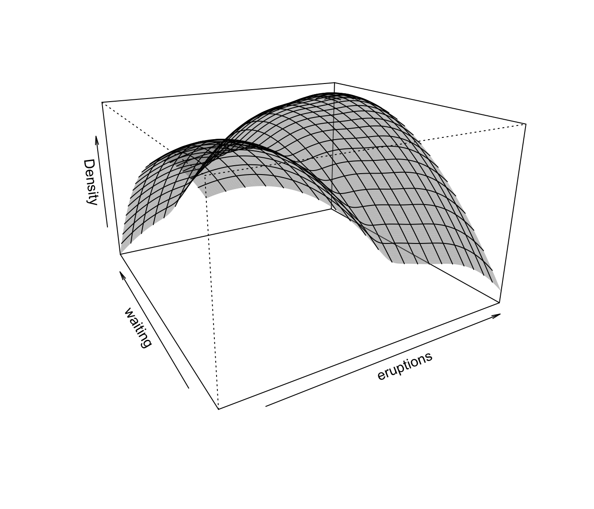
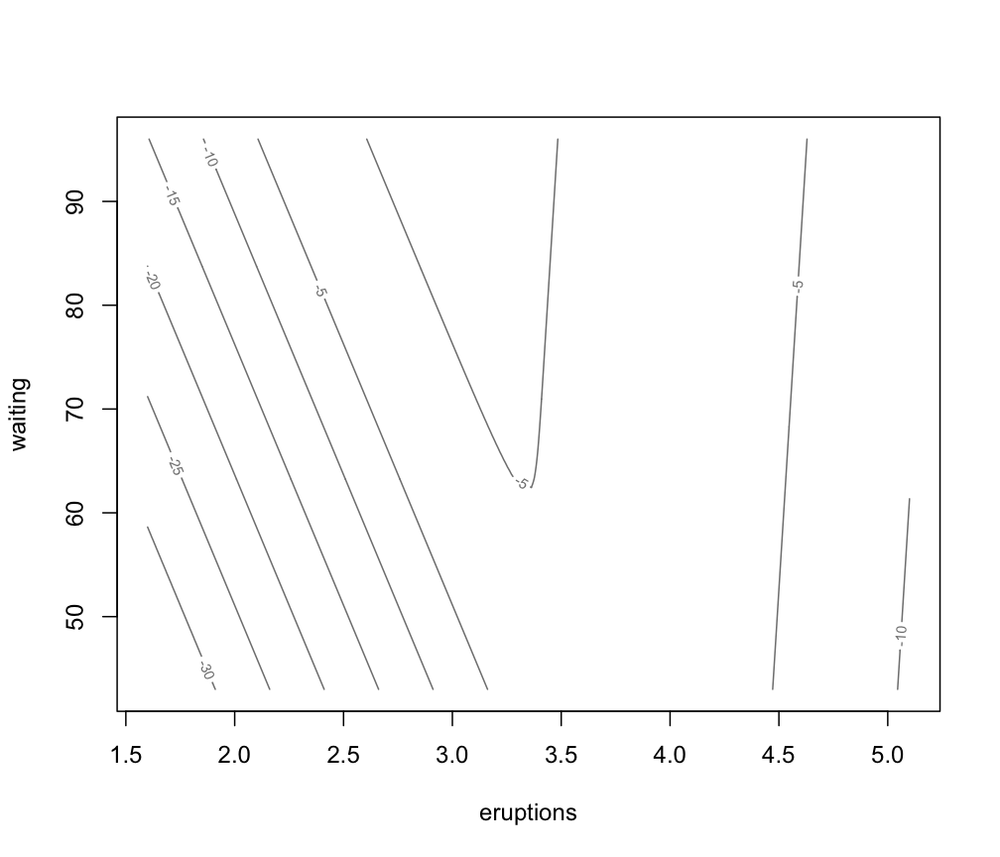

Density or uncertainty surface for bivariate mixtures
surfacePlot.RdPlots a density or uncertainty surface given bivariate data and parameters of a MVN mixture model for the data.
Usage
surfacePlot(data, parameters,
what = c("density", "uncertainty"),
type = c("contour", "hdr", "image", "persp"),
transformation = c("none", "log", "sqrt"),
grid = 200, nlevels = 11, levels = NULL,
prob = c(0.25, 0.5, 0.75),
col = gray(0.5),
col.palette = function(...) hcl.colors(..., "blues", rev = TRUE),
hdr.palette = blue2grey.colors,
xlim = NULL, ylim = NULL, xlab = NULL, ylab = NULL,
main = FALSE, scale = FALSE, swapAxes = FALSE,
verbose = FALSE, ...)Arguments
- data
A matrix, or data frame of bivariate observations. Categorical variables are not allowed. If a matrix or data frame, rows correspond to observations and columns correspond to variables.
- parameters
A named list giving the parameters of an MCLUST model, used to produce superimposing ellipses on the plot. The relevant components are as follows:
meanThe mean for each component. If there is more than one component, this is a matrix whose kth column is the mean of the kth component of the mixture model.
varianceA list of variance parameters for the model. The components of this list depend on the model specification. See the help file for
mclustVariancefor details.
- what
Choose from one of the following options:
"density"(default),"uncertainty"indicating what to plot.- type
Choose from one of the following three options:
"contour"(default),"hdr","image", and"persp"indicating the plot type.- transformation
Choose from one of the following three options:
"none"(default),"log","sqrt"indicating a transformation to be applied before plotting.- grid
The number of grid points (evenly spaced on each axis). The mixture density and uncertainty is computed at
grid x gridpoints to produce the surface plot. Default:100.- nlevels
The number of levels to use for a contour plot. Default:
11.- levels
A vector of levels at which to draw the lines in a contour plot.
- prob
A vector of probability levels for computing HDR. Only used if
type = "hdr"and supersede previousnlevelsandlevelsarguments.- col
A string specifying the colour to be used for
type = "contour"andtype = "persp"plots.- col.palette
A function which defines a palette of colours to be used for
type = "image"plots.- hdr.palette
A function which defines a palette of colours to be used for
type = "hdr"plots.- xlim, ylim
Optional argument specifying bounds for the ordinate, abscissa of the plot. This may be useful for when comparing plots.
- xlab, ylab
Optional argument specifying labels for the x-axis and y-axis.
- main
A logical variable or
NULLindicating whether or not to add a title to the plot identifying the dimensions used.- scale
A logical variable indicating whether or not the two dimensions should be plotted on the same scale, and thus preserve the shape of the distribution. The default is not to scale.
- swapAxes
A logical variable indicating whether or not the axes should be swapped for the plot.
- verbose
A logical variable telling whether or not to print an indication that the function is in the process of computing values at the grid points, which typically takes some time to complete.
- ...
Other graphics parameters.
Value
A plots showing (a transformation of) the density or uncertainty for the given mixture model and data.
The function also returns an invisible list with components x,
y, and z in which x and y are the values used to
define the grid and z is the transformed density or uncertainty at the
grid points.
Details
For an image plot, a color scheme may need to be selected on the display device in order to view the plot.
Examples
# \donttest{
faithfulModel <- Mclust(faithful)
surfacePlot(faithful, parameters = faithfulModel$parameters,
type = "contour", what = "density", transformation = "none",
drawlabels = FALSE)

surfacePlot(faithful, parameters = faithfulModel$parameters,
type = "persp", what = "density", transformation = "log")

surfacePlot(faithful, parameters = faithfulModel$parameters,
type = "contour", what = "uncertainty", transformation = "log")

# }